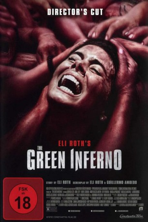

#10913 The Green Inferno
 
 IMDB-Wertung: 5.3 / 10
IMDB-Wertung: 5.3 / 10  Metascore: 38
Metascore: 38 
Eine Gruppe von Studenten und Weltverbesserern fliegt von New York City an den Amazonas, um dort einen bedrohten Volksstamm zu retten. Als ihr Flugzeug abstürzt, müssen sie sich jedoch völlig allein durch den peruanischen Dschungel schlagen. Unter ihnen befinden sich Justine, Alejandro, Jonah und Kaycee, die mit dem Überlebenskampf im exotischen Regenwald auf eine harte Probe gestellt werden. Endlich trifft die Gruppe auf die hilfsbereiten Einheimischen des Indio-Stammes, dem sie eigentlich helfen wollten. Doch die Erleichterung über die vermeintliche Rettung hält nicht lange vor: Zu spät bemerken sie, dass es sich bei ihren Rettern um Kannibalen handelt. Die Einwohner haben es auf das Fleisch der Überlebenden abgesehen und nehmen die Eindringlinge gefangen…
Jahr: 2013
Dauer: 100 Minuten
FSK: 18
Land: USA Studio: BH TiltTonspuren: DTS - ,
Untertitel:
Auflösung: 1080p (1920x804) Größe: 9123 MB
Genre: Thriller, Horror, Abenteuer
Regisseur:  Eli Roth
Eli Roth
Drehbuch: Guillermo Amoedo, Eli Roth
Soundtrack: Manuel Riveiro
Darsteller:
 Lorenza Izzo als Justine
Lorenza Izzo als Justine- Ariel Levy als Alejandro
 Daryl Sabara als Lars
Daryl Sabara als Lars- Kirby Bliss Blanton als Amy
- Magda Apanowicz als Samantha
- Sky Ferreira als Kaycee
- Nicolás Martínez als Daniel
- Ignacia Allamand als Kara
- Ramón Llao als The Bald Headhunter
 Richard Burgi als Charles
Richard Burgi als Charles- Tatiana Panaifo als Village Girl
- Clara Vázquez als Elder's Assistant
- Eusebio Arenas als Scott
- Paz Bascuñán als Sister
- Kay Day als Activist (uncredited)
- Aaron Burns als Jonah
- Matías López als Carlos
- Antonieta Pari als The Village Elder
- Percy Chumbe als Guard Leader
- Sally Rose als Teacher
- Paul Norris als Detective
- John Mark Allan als Dean
- Mary Dunworth als Activist 1
- Cody Pittman als Activist 2
- Carolina Chacón als Activist 3
- Eric Kleinsteuber als Activist 4
- Marco Frías als Pilot
- Bruno Pakomio als Copilot
- Eufemia Teao als Ceremonial Painter
- Maria Tepihe als Knife Sharpener
- Karen Ofanama als Tall Girl
- Nelson Castillo als Rescue Worker
- Tyler Caffall als Activist 5 (uncredited)
Datei: X:\FSK18-2013\Green Inferno, The (2013, FSK18, 1920x804).mkv seit 03.04.2019
Festplatte: FSK18
 Es gibt insgesamt 26 Filme in der Gruppe 'FSK18-2013'
Es gibt insgesamt 26 Filme in der Gruppe 'FSK18-2013'